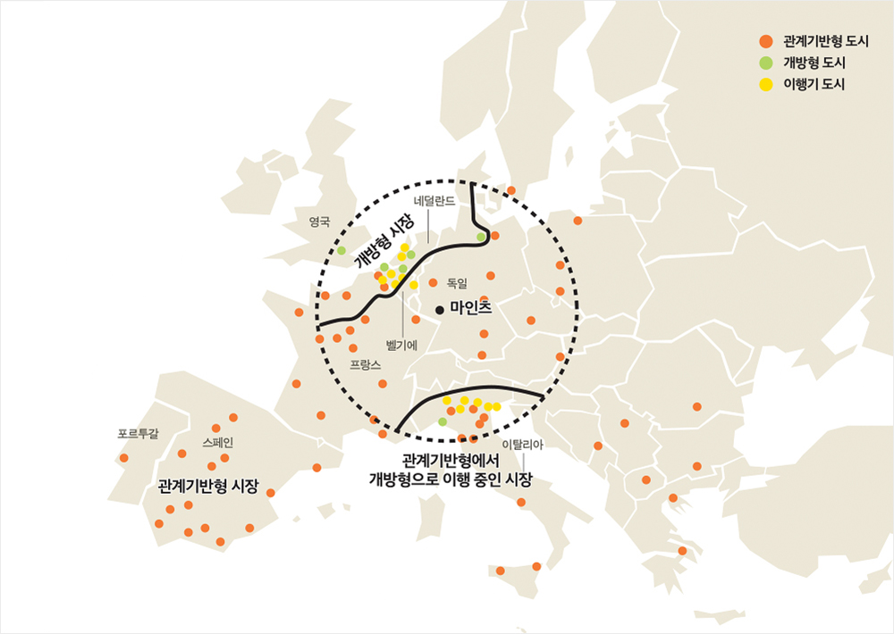
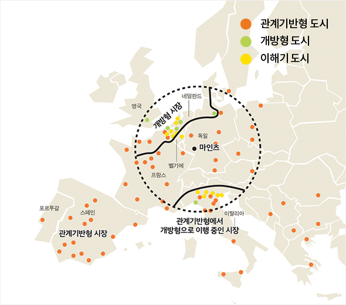
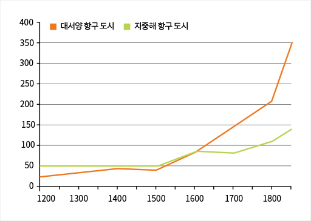
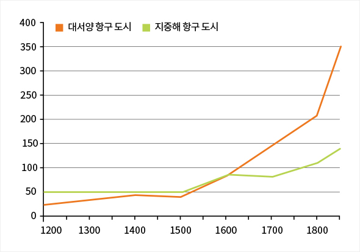

와 제 롤모델이 잡스에요!!! 아이폰 첫 출시되고 나서부터 계속 아이폰 쓰고 있는데 잡스가 너무 그리워요ㅠㅠ 지금은 돈만 벌려고 하는 것 같아서 디자인 발전도 없고ㅠㅠ와 제 롤모델이 잡스에요!!! 아이폰 첫 출시되고 나서부터 계속 아이폰 쓰고 있는데 잡스가 너무 그리워요ㅠㅠ 지금은 돈만 벌려고 하는 것 같아서 디자인 발전도 없고ㅠㅠ와 제 롤모델이 잡스에요!!! 아이폰 첫 출시되고 나서부터 계속 아이폰 쓰고 있는데 잡스가 너무 그리워요ㅠㅠ 지금은 돈만 벌려고 하는 것 같아서 디자인 발전도 없고ㅠㅠ와 제 롤모델이 잡스에요!!! 아이폰 첫 출시되고 나서부터 계속 아이폰 쓰고 있는데 잡스가 너무 그리워요ㅠㅠ 지금은 돈만 벌려고 하는 것 같아서 디자인 발전도 없고ㅠㅠ와 제 롤모델이 잡스에요!!! 아이폰 첫 출시되고 나서부터 계속 아이폰 쓰고 있는데 잡스가 너무 그리워요ㅠㅠ 지금은 돈만 벌려고 하는 것 같아서 디자인 발전도 없고ㅠㅠ
차트로 보는 해운
16세기 유럽 도시의 운명을 가른
운송과 정보의 혁명
경제학을 전공한 신현호 칼럼니스트는 KPMG에서 비즈니스 컨설턴트로 근무한 뒤,
국회 경제상임위의 정책연구위원으로 근무하였고 지금은 경제 칼럼니스트로
활동하고 있다. 해운, 무역, 세계화에 대한 흥미로운 차트를 <바다소리>에 소개한다.
중세 유럽의 상인 조합인 길드가 모여 있던 벨기에 브뤼셀의 ‘길드 하우스’
16세기의 상거래 제도적 기반이 유럽 지역 도시들의 시장 환경과 인구를 어떻게 변화시켰는지
알아 볼 수 있는 흥미로운 차트를 소개한다.
글
신현호(칼럼니스트)
14세기 말까지만 해도 유럽에서조차 이해 당사자를 공정하게 다루는 제도적 기반은 취약하였다. 공정한 제도가 갖추어지지 않을 경우, 상업은 믿을 수 있는 거래처 사이에 제한된 관계기반형 거래를 중심으로 발전할 수밖에 없는데, 그렇게 길드(Guild)라고 하는 중세 유럽의 노동자조합이 생겨났다. 이로 인해 특권화된 상인들만 길드 네트워크 내에서 활동할 수 있으며, 그렇지 않은 상인들은 제대로 거래에 참여할 수 없었다.


그림116세기 유럽 지역 도시들의 시장 환경 (출처: Chicago 대학 워킹페이퍼)
한편 유럽 번영의 기초 중 하나였던 길드는 시간이 흐를수록 진입 장벽을 높여 배타적 독점체로서의 성격이 강화되어 오히려 성장을 저해했다. 벨기에 앤트워프의 세계 최초 상업거래소 설립(1531), 네덜란드 암스테르담의 세계 최초 증권거래소 설립(1602), 영국의 주식회사 발전 등에서 보여지듯, 영국과 네덜란드 등의 도시들에서 관계기반형 거래를 극복한 누구나 참여할 수 있는 개방형 거래로의 전환이 이루어지기 시작했다.
그런데 이런 변화는 모든 유럽 지역에서 동일하게 나타나지 않았다. 16세기 유럽의 도시는 그림1에서 <그림1 참조> 보듯 상업과 관련하여 세 가지 유형으로 구분되는데, 첫째 여전히 관계기반형 거래를 중심으로한 스페인과 포르투갈의 도시들, 둘째 개방형 거래를 발전시킨 영국과 네덜란드의 도시들, 그리고 끝으로 관계기반형 거래에서 개방형 거래로 옮겨가는 프랑스와 이탈리아의 도시들이 있었다.
인도 방갈로아 경영대학의 프라텍 라지 교수는 이러한 지리적 차이의 발생 이유를 밝히는 연구를 수행하였는데, 이들 도시의 운명을 가른 두 가지 핵심 요인은 운송혁명과 정보혁명이라고 말한다. 우선 운송과 관련하여 16세기 북서 유럽지역은 아시아와 아메리카로 향하는 대서양 항로의 발견으로 장거리 무역이 발전하여 다양한 상인들이 모였고, 이 지역의 기존 상인들은 기존 길드 네트워크를 넘어서 낯선 이들과 거래를 수행하는 것의 이익이 커졌기 때문에 점차 개방형 거래가 확대된 것이다.


그림2시기별 도시 인구의 변화 (단위: 천명, 출처: Chicago 대학 워킹페이퍼)
다음으로 정보와 관련해서 보면, 이들 북서 유럽지역은 구텐베르크가 활자 인쇄를 발명한 독일 도시 마인츠와 가까운 지역이어서, 복식부기 등 상거래 관련 서적이 다른 지역의 도시들보다 일찍 대규모로 보급될 수 있었다. 이러한 선진적 거래 관행을 통해 낯선 이들과의 거래에서 발생할 수 있는 위험을 줄일 수 있었기 때문에, 이 역시 개방형 거래의 확산에 기여하였다. 그 결과 개방형 거래가 만개한 북서 유럽지역의 도시들의 인구 증가가 지중해 지역 도시들의 인구 증가를 압도하는 것에서 볼 수 있듯, 두 지역의 격차는 크게 벌어졌다. <그림2 참조>
라지 교수는 더 나아가 우리 시대의 교훈도 도출했다. 상거래의 투명성이 낮고 수 많은 기업과 상인들의 퀄리티에 대한 정보가 제대로 제공되지 않는다면, 비즈니스는 소수의 대규모 기업에 집중될 수밖에 없고 이것은 소비자들의 후생에 악영향을 미친다는 것이다. 경제 환경에서 정보의 투명성이 중요하다는 것을 다시 한번 확인할 수 있다.
신현호 칼럼니스트
(hyunhos@gmail.com)
-
최고예요
322
-
좋아요
322
-
슬퍼요
322
-
그저그래요
322
-
화나요
322